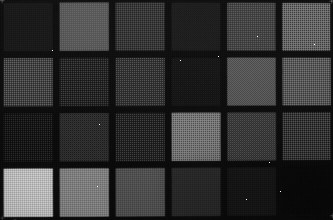
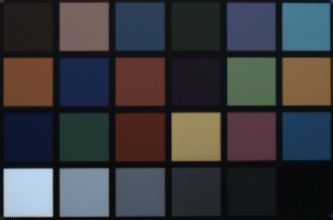
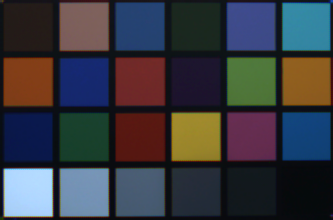
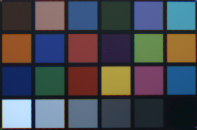

|
IDS peak ICV v1.5.0
|
|
IDS peak ICV v1.5.0
|
This document describes the image processing pipeline designed to perform a series of operations on raw sensor data to produce optimized, visually accurate, and display-ready images. The pipeline manages unpacking raw input, correcting sensor artifacts, adjusting image properties, and converting pixel formats as needed.
Flexibility is a core aspect of the pipeline’s design. A base pipeline class defines the primary interface and common utilities for image processing pipelines but does not include any predefined sequence of operations. Developers extend this base class to implement custom pipelines tailored to specific application requirements.
In contrast, the default pipeline implementation provides a ready-to-use standard processing sequence, which is described in detail below.
The default pipeline provides a complete, modular image processing chain to transform raw sensor data into ready-to-use image formats. It is designed for industrial vision systems where consistent image quality, configurability, and real-time performance are essential.
This pipeline supports a broad range of operations:
Each stage is configurable to fit application-specific needs. The pipeline’s internal logic activates only relevant steps, minimizing overhead and easing integration.
The default pipeline offers full access to individual features and internal format inference, enabling efficient integration into custom vision solutions.
For advanced scenarios such as adaptive white balance or exposure control, the pipeline integrates seamlessly with the IDS peak AFL.
This pipeline is intended for machine vision applications where raw image data from industrial sensors (typically Bayer or Mono) must be processed into a calibrated, standardized output format.
Typical Use Cases:
The pipeline expects input in the form of a valid image view, which is typically constructed from a buffer supplied by the IDS acquisition backend (IDS peak genericAPI library).
Optionally, the IDS peak AFL library is required for automatic brightness, white balance and focus adjustments.
The following images illustrate different stages in a pipeline, where hotpixel correction, gain, color correction and gamma are enabled. The input is a bayered image, the output format is RGB.
| Source | Hotpixel Correction | Gain |
|---|---|---|
 |
| Debayering | Color Correction | Gamma |
|---|---|---|
 |  |  |
This section introduces the core features of the image processing pipeline. It explains how to use default settings, customize individual stages, load and save configurations, and enable advanced auto features. You’ll also learn about setting output formats and managing processing policies to optimize performance and image quality.
The simplest way to use the pipeline is to create it with the default settings and then process an image view constructed from a IDS peak genericAPI buffer. This will produce a color image in the RGB8 format, which represents an 8-bit per channel RGB image.
For example, after constructing the pipeline, you can pass an image view containing raw sensor data to it and receive a color image as output.
The pipeline can be configured using a JSON settings file. This allows you to load settings saved with peak Cockpit, enabling you to customize the pipeline’s behavior without modifying the source code.
To apply the configuration, load the settings by calling the import settings from file method with the JSON file before processing images.
It is also possible to save the pipeline configuration programmatically, making it easy to reuse or share settings.
You can fine-tune specific stages of the pipeline by accessing their settings directly. For example, you can adjust parameters like gain, gamma and binning as shown below:
You can reset all pipeline settings to their default values with a single method call. This is useful if you want to undo all customizations and return to the default configuration.
You can enable or disable individual features in the pipeline. This allows you to customize which parts of the pipeline are active during processing.
Use the following method to define the pipeline’s output pixel format. The pipeline will automatically convert processed images to the selected format during execution. By default, the output pixel format is RGB8 (see PixelFormatConversionModule).
Based on this setting, the pipeline:
For example, when the output format is a Bayer type, the following modules are bypassed:
The pipeline provides fine-tuned control over bit depth handling through a configurable processing policy. You can set the desired policy:
Fast Reduces bit depth as early as possible (e.g., from 12-bit to 8-bit) to maximize throughput. Ideal for preview streams or latency-critical applications.Balanced (default) Maintains the input bit depth throughout processing and reduces bit depth only at the final stage. Balances processing speed with image quality.Enhanced Expands to a higher bit depth (e.g., from 8-bit to 10-bit float) for all internal processing if the target bit depth is higher than the source. Improves image quality for downstream stages such as color correction, gamma, and sharpening, at the cost of increased processing time.To enable automatic adjustments like auto brightness, auto white balance, or auto focus, you need to create and configure an auto features module and then pass it to the pipeline. This requires that the IDS peak AFL library is properly installed and linked in your project. The following example demonstrates how to create, configure, and attach the auto features module to the pipeline.
Prerequisite: A device must already be opened using IDS peak genericAPI, and its reference stored in the variable device.